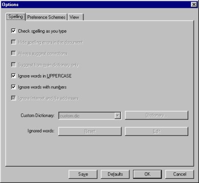
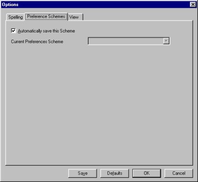
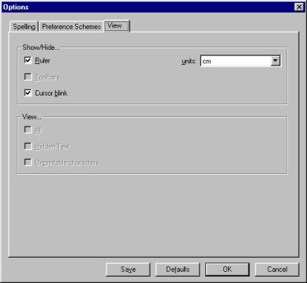

| |
|
About AbiWord About Open Source Index Contents What's New Check Version Introduction Installation Getting Started The Workspace Entering Text Formatting Edit Commands Paragraphs Styles Inserting Objects Printing Preferences Shortcuts abisource.com FAQ Credits Search |
PreferencesAbiWord can be personnalised according to to your needs or your practices. Firstly, it is possible to hide or display the horizontal and vertical rulers. To do so, check the option " Ruler " under the "View" menu. All the other other features that are able to be customised, are found under " Options... " in the "Tools" menu. If you click on this the window below then appears:  This window contains three options:
In bottom of this window there are four buttons
There are several options which can be checked or unchecked:
The other options are grayed out as they have not yet been implemented in AbiWord. This applies to the Dictionnary, Edit and Reset options.  This sheet contains the option "Automatically save this Scheme ". If this option is checked, then saving the AbiWord preferences will work. If for example you choose in the options to hide the ruler, then ruler will remain hidden when you next start AbiWord. The " Current Scheme Preferences " field makes it possible to define several types of personalisation. This appears grayed in because it has not been implmented yet.  This sheet is also composed of several options that can be checked or unchecked, under two headings: the heading "Show/Hide... " (Cacher/Masquer...) and the heading " View... "
The "units" field makes it possible to choose which measuring unit is used for the rule. Click on the small arrow on the right of the "units" field to select the measuring unit. You can choose between inches, centimetres, pixels or picos. The other options are grayed out as they are not yet implemented in AbiWord. |